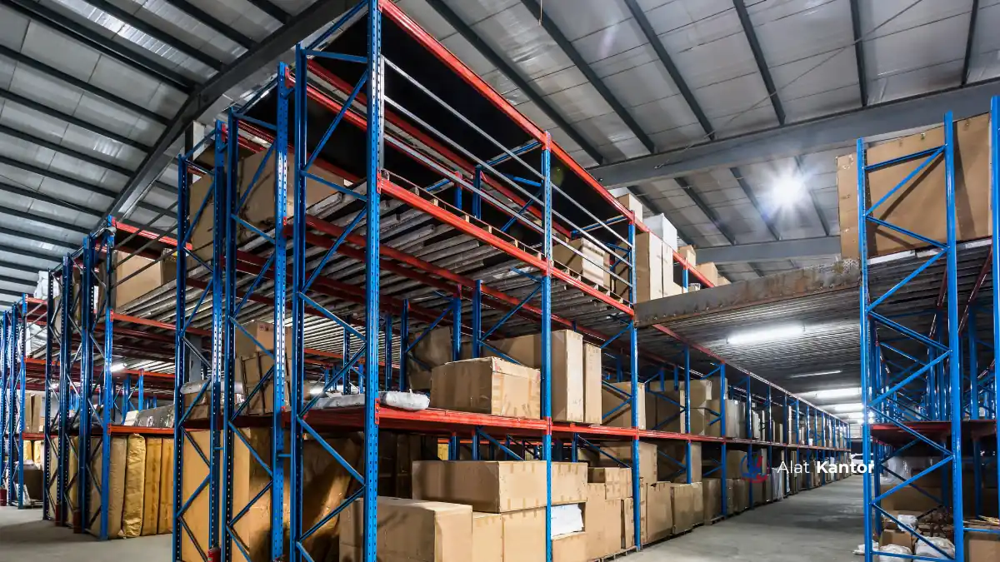

Poin Utama Seputar Alat Tulis Kantor
- Alat tulis kantor mencakup kategori dasar seperti kertas, alat tulis, alat penyimpanan dokumen, dan barang habis pakai printer.
- Selain 10 item wajib, terdapat kategori pendukung lain yang tetap penting tergantung jenis instansi.
- Ketersediaan ATK yang cukup secara langsung memengaruhi kelancaran administrasi dan produktivitas tim harian.
- Pembelian ATK secara grosir umumnya lebih efisien dibanding eceran untuk kebutuhan instansi dengan volume besar.
- MAROON ATK menyediakan pengadaan ATK grosir dengan dukungan dokumen lengkap untuk Jakarta, Surabaya, Malang, Denpasar, Makassar, dan seluruh Indonesia.
Apa Itu Alat Tulis Kantor dan Mengapa Penting bagi Operasional Instansi?
Alat tulis kantor (ATK) adalah kumpulan perlengkapan administratif yang digunakan untuk menunjang kegiatan tulis-menulis, pencatatan, pengarsipan, dan komunikasi tertulis di lingkungan kerja.
Ketersediaan ATK yang memadai berpengaruh langsung terhadap kelancaran operasional harian. Ketika stok alat tulis kantor habis di tengah proses kerja, aktivitas administratif seperti pencetakan dokumen, pengarsipan surat, atau persiapan rapat dapat tertunda. Bagi instansi pemerintah, sekolah, kampus, dan perusahaan swasta, ATK bukan sekadar barang pelengkap, melainkan komponen operasional yang menopang produktivitas tim secara berkelanjutan.
Selain fungsi praktis, pengelolaan ATK yang tertata juga berkaitan dengan efisiensi anggaran. Instansi pemerintah umumnya menjalankan siklus anggaran tahunan mengikuti periode APBN atau APBD, sehingga perencanaan kebutuhan ATK di awal tahun anggaran membantu menghindari pembelian mendadak yang cenderung kurang efisien dari sisi harga maupun waktu.
10 Alat Tulis Kantor Wajib Ada untuk Mendukung Produktivitas Tim
Berikut sepuluh kategori alat tulis kantor yang secara umum wajib tersedia di kantor, sekolah, maupun instansi untuk menunjang kelancaran kerja tim sehari-hari.
- Kertas HVS dan kertas cetak - kebutuhan dasar untuk pencetakan dokumen, laporan, dan surat resmi.
- Pulpen, pensil, dan spidol - alat tulis harian untuk pencatatan dan penandaan dokumen.
- Stapler dan isi staples - untuk menyatukan dokumen multi-halaman.
- Ordner dan map arsip - untuk pengelompokan dan penyimpanan dokumen secara rapi.
- Tinta printer atau toner original - memastikan pencetakan dokumen berjalan lancar tanpa gangguan kualitas cetak.
- Amplop dan label surat - untuk pengiriman dokumen resmi antarunit atau instansi.
- Penggaris, cutter, dan gunting kertas - alat bantu pemotongan dan pengukuran dokumen.
- Spidol whiteboard dan penghapus papan tulis - mendukung kegiatan rapat, presentasi, dan pengajaran.
- Sticky notes dan clip kertas - untuk penandaan cepat dan pengelompokan dokumen sementara.
- Kalkulator dan alat hitung sederhana - mendukung tugas administrasi keuangan dan pelaporan.
Kesepuluh kategori ini merupakan kebutuhan dasar yang hampir selalu digunakan di hampir semua jenis instansi, baik kantor pemerintah, sekolah, kampus, maupun perusahaan swasta.

Apa Saja Kategori ATK Pendukung di Luar 10 Item Wajib Tersebut?
Di luar 10 item wajib di atas, terdapat beberapa kategori alat tulis kantor pendukung yang kebutuhannya bervariasi tergantung jenis instansi dan skala operasional.
- Alat koreksi, seperti tipe-x cair dan correction tape, untuk memperbaiki kesalahan tulis pada dokumen manual.
- Perlengkapan penjepit dan pengelompokan, seperti binder clip, paper clip, dan rubber band, untuk mengelompokkan dokumen dalam jumlah kecil.
- Perlengkapan presentasi, seperti laser pointer, flipchart, dan kertas presentasi, untuk mendukung kegiatan rapat dan pelatihan.
- Perlengkapan pengarsipan digital, seperti flashdisk dan label pengarsipan digital, untuk mendukung transisi dokumen fisik ke digital.
- Perlengkapan meja kerja, seperti tempat pensil, kalender meja, dan nampan dokumen, untuk menjaga kerapian meja kerja staf.
- Perlengkapan cap dan stempel, seperti bantalan stempel dan tinta stempel, yang umum dibutuhkan instansi untuk pengesahan dokumen resmi.
Kategori pendukung ini umumnya tidak dibutuhkan sesering 10 item wajib di atas, namun tetap penting disediakan agar operasional administrasi berjalan tanpa hambatan, terutama pada instansi dengan volume dokumen dan kegiatan rapat yang tinggi.
Bagaimana Cara Menentukan Kebutuhan Alat Tulis Kantor yang Tepat?
Kebutuhan alat tulis kantor idealnya ditentukan berdasarkan jumlah staf, volume dokumen yang diproses, dan siklus kerja instansi, bukan berdasarkan perkiraan semata.
Beberapa faktor yang memengaruhi kebutuhan ATK suatu instansi antara lain:
- Jumlah pengguna aktif, yaitu jumlah staf atau siswa yang menggunakan ATK secara rutin setiap hari.
- Volume dokumen, terutama untuk instansi dengan aktivitas administratif tinggi seperti pengarsipan surat masuk-keluar.
- Siklus anggaran, karena instansi pemerintah umumnya menjalankan siklus pengadaan tahunan yang mengikuti periode anggaran resmi.
- Frekuensi rapat dan kegiatan presentasi, yang memengaruhi kebutuhan spidol whiteboard, sticky notes, dan alat tulis pendukung lain.
- Kapasitas penyimpanan, karena pembelian dalam jumlah besar memerlukan ruang penyimpanan yang memadai agar stok tidak rusak, terutama untuk tinta printer.
Menghitung kebutuhan berdasarkan pemakaian rata-rata tiga bulan terakhir umumnya memberikan estimasi yang lebih akurat dibanding perkiraan kasar.
Bagaimana Cara Menyimpan dan Merawat ATK Agar Tidak Cepat Rusak?
Penyimpanan ATK yang tepat dapat memperpanjang usia pakai barang dan mencegah pemborosan anggaran akibat kerusakan sebelum waktunya.
- Simpan kertas di tempat kering untuk mencegah kertas lembap dan menggumpal saat digunakan di printer atau mesin fotokopi.
- Simpan tinta dan toner printer pada suhu ruang stabil, jauh dari sinar matahari langsung, agar kualitas cetak tetap terjaga.
- Gunakan sistem rotasi stok (first in, first out) agar barang yang lebih lama dibeli digunakan lebih dulu.
- Pisahkan penyimpanan alat tulis dan bahan kimia seperti tipe-x untuk menghindari kontaminasi bau atau kebocoran pada barang lain.
- Catat stok secara berkala menggunakan daftar inventaris sederhana agar mudah memantau kapan waktu restock berikutnya.
Apa Saja Alat Tulis Kantor dan Barang Habis Pakai yang Perlu Distok Rutin?
Barang habis pakai (BHP) adalah kategori ATK yang cepat habis penggunaannya sehingga perlu distok secara berkala agar operasional tidak terganggu.
Kategori BHP yang umumnya perlu distok rutin meliputi tinta printer atau toner, kertas HVS, isi staples, spidol whiteboard, dan amplop surat. Instansi dengan volume cetak tinggi, seperti sekolah yang rutin mencetak soal ujian atau kantor pemerintah yang menangani banyak surat resmi, sebaiknya menjadwalkan pembelian BHP secara berkala, bukan menunggu stok benar-benar habis.
Pendekatan restock terjadwal ini membantu menghindari gangguan operasional mendadak sekaligus memudahkan perencanaan anggaran bulanan.
Kesalahan Umum dalam Pengadaan Alat Tulis Kantor
- Membeli tanpa data pemakaian, sehingga stok yang dibeli tidak sesuai kebutuhan aktual.
- Mengandalkan pembelian eceran mendadak, yang umumnya memiliki harga per unit lebih tinggi dibanding pembelian grosir terjadwal.
- Mengabaikan kualitas barang, terutama untuk tinta printer, yang jika berkualitas rendah dapat merusak perangkat printer dalam jangka panjang.
- Tidak menyimpan dokumen pembelian resmi, padahal kelengkapan seperti kuitansi dan faktur pajak diperlukan untuk keperluan audit keuangan instansi.
- Tidak memiliki vendor tetap, sehingga proses pengadaan berulang kali dimulai dari awal tanpa efisiensi harga maupun waktu.
ATK Eceran vs Grosir: Mana yang Lebih Efisien untuk Instansi?
Pembelian ATK secara grosir umumnya lebih efisien dari sisi biaya dan waktu dibanding pembelian eceran, khususnya untuk instansi dengan kebutuhan rutin dalam jumlah besar.
| Aspek | Pembelian Eceran | Pembelian Grosir |
|---|---|---|
| Harga per unit | Cenderung lebih tinggi | Lebih kompetitif untuk volume besar |
| Waktu pengadaan | Berulang kali, kurang efisien | Terjadwal, sekali proses untuk stok periode tertentu |
| Kelengkapan dokumen | Sering tidak lengkap | Umumnya disertai SPH, spesifikasi teknis, dan faktur pajak |
| Cocok untuk | Kebutuhan mendadak skala kecil | Kebutuhan rutin instansi, sekolah, dan Perusahaan |
Untuk instansi dengan kebutuhan ATK bulanan atau kontrak rutin, pendekatan grosir umumnya memberikan efisiensi yang lebih baik dalam jangka panjang.
Bagaimana Proses Pengadaan Alat Tulis Kantor untuk Instansi Pemerintah dan Swasta?
Proses pengadaan ATK untuk instansi pemerintah umumnya mengikuti mekanisme resmi seperti e-purchasing melalui platform pengadaan pemerintah, sementara perusahaan swasta biasanya menggunakan skema pembelian langsung ke vendor.
Secara umum, tahapan pengadaan ATK meliputi:
- Identifikasi kebutuhan dan penyusunan daftar barang.
- Permintaan penawaran harga kepada vendor terpercaya.
- Verifikasi spesifikasi teknis dan kelengkapan dokumen legal.
- Proses pembayaran dan penerbitan faktur pajak.
- Pengiriman barang serta pengecekan kesesuaian pesanan.
Untuk instansi pemerintah, mekanisme pengadaan barang dan jasa umumnya mengacu pada ketentuan yang diterbitkan oleh LKPP, termasuk penggunaan platform e-purchasing seperti LPSE dan SIPLah untuk sekolah.
Kami menyediakan dukungan dokumen legal lengkap, termasuk Surat Penawaran Harga, spesifikasi teknis, dan faktur pajak, untuk memudahkan instansi dalam proses pengadaan resmi baik melalui LPSE, SIPLah, maupun pembelian langsung.
Bagi instansi yang membutuhkan perabotan kantor pendukung selain ATK, Anda dapat membaca panduan Cara Memilih Kursi Ergonomis dengan Mekanik Hidrolik Terbaik. Sementara untuk kebutuhan teknologi ruang kelas atau ruang rapat, tersedia juga Panduan Pengadaan Smartboard 2026 untuk Sekolah dan Kantor Instansi.
Kami melayani pengadaan alat tulis kantor untuk instansi di Jakarta, Surabaya, Malang, Denpasar, Makassar, serta seluruh Indonesia.